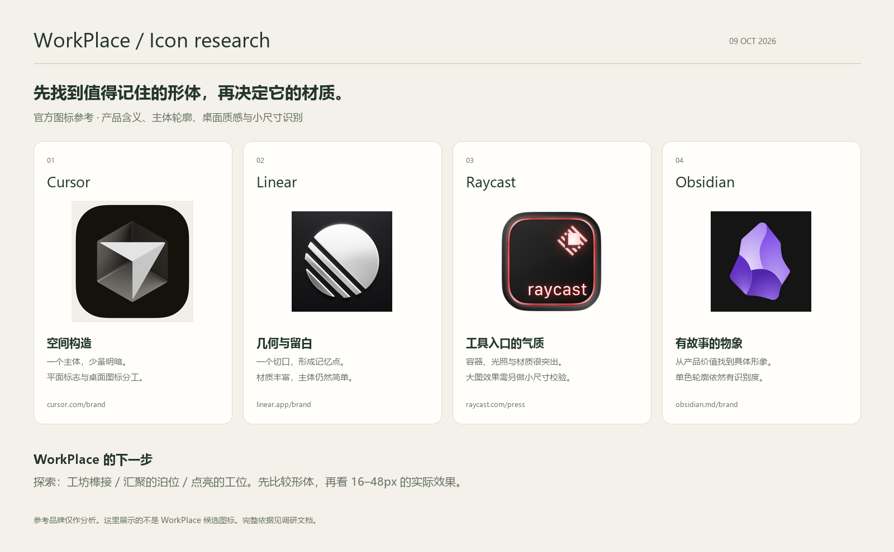

工坊榫接
几块可组合的实体，接合成一件稳定的创作器物。用自己的工具，搭出自己的工作台。
WorkPlace 是长期使用的个人 AI 编程工作台，连接 Agent、模型与工具。本轮从项目能力、官方品牌案例和桌面图标规范出发，寻找一个能独立成立的产品符号。
已选定 A · 查看正式图标与下载 →
几块可组合的实体，接合成一件稳定的创作器物。用自己的工具，搭出自己的工作台。
有承托感的主体，接住向内汇聚的路径。把不同模型和 Agent 的能力组织在一起。
一个紧凑的创作空间，一个克制的焦点。打开它，回到自己的创造状态。